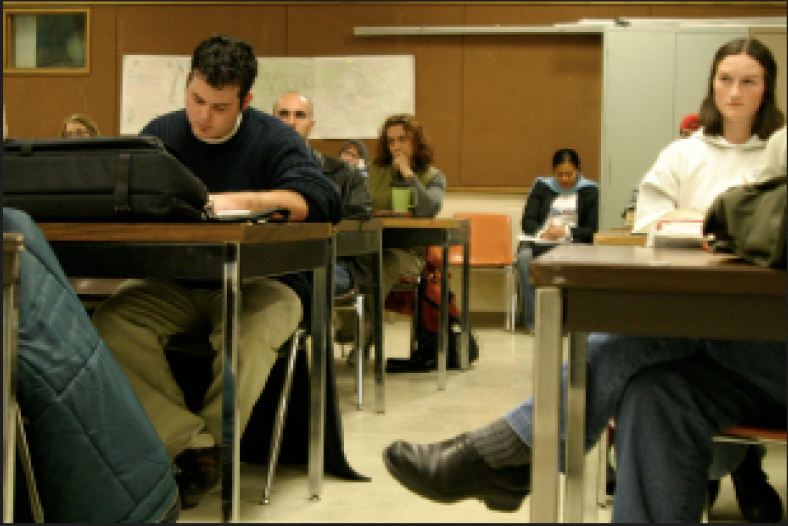

Graduate Students

History lies at the center of a liberal arts education. History courses convey our collective knowledge of the human past and emphasize written and oral skills, analysis and critical thinking, and the ability to assess conflicting interpretations. These skills prepare students for the responsibilities of citizenship and cultivate an awareness of the complexities of life. History provides valuable preparation for careers in university and college teaching and research, primary and secondary education, law, government, public service, journalism, libraries and museums, international business, and medicine.